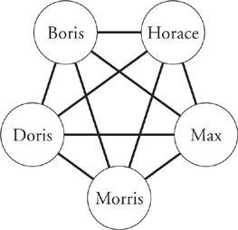
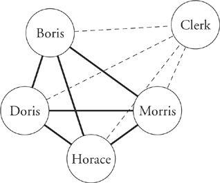

The Problem with Gofers
But let’s come to grips with the heart of the problem here: The gofer is overhead. You may hire him today, but he’s sure to be gone again with the next cost-reduction exercise. We have become so obsessed with getting rid of people who are burdened with the characterization overhead that we have ended up with organizations where many high-priced knowledge workers and managers are spending as much as a quarter of their time being their own overhead. Is this an economy?
An absence of low-level support becomes even more important when knowledge workers are arrayed in teams. Consider a project made up of five developers:

The five have divided up the work among themselves. For such a small group, there is probably no way to divide the work without all team members having at least some interaction with each of the others. So each person has four people to interact with, and the total of all interaction paths is ten.
If we now note that each of the five developers is 20 percent used up doing low-level support, we can envision a slightly trimmer variant of the project by introducing one clerical support person:

Here we have four developers and only six possible interaction paths among them. In addition, each of the developers has interaction with the clerical person, but this is a much thinner interaction and uses up considerably less of the developers’ brainpower.
By dividing up the work into four pieces instead of five, the total time spent serving the interactions is reduced. The capacity of the four-person team plus clerk is thus greater than that of the five-person team. Four developers plus a clerk also cost less than a five-developer team.